How it started
I had been interested in origami and transformable structures before RSI, but this project was the first time I connected that interest to a formal research problem. I worked on deployable structures, which are systems that can move between different geometric configurations.
The question I worked on was: if a polyhedron is cut open into a flat net, can a thread be routed through that net so that pulling the thread efficiently brings it back into its 3D shape?
Early inspiration
Before RSI, one of the things that got me interested in deployable structures was origami and especially flasher models, which fold compactly and then open out in a controlled way.
The idea
A deployable structure is something that can move between different shapes or configurations. The version I worked on uses a flat net of a polyhedron. The goal is to thread the net in a way that lets it pull up into the intended 3D structure.
What I did
I looked at the problem using graph threading. In graph threading, a thread is passed through a collection of pieces so that changing the tension changes the structure’s configuration. More formally, a threading can be thought of as a closed walk through a graph that visits the required vertices and edges without making unnecessary U-turns.
The method I explored combines hinges and threads. Hinges keep the faces ordered and give them a path to rotate along. Threads make the structure easier to move because pulling the thread can guide the flat net into shape.
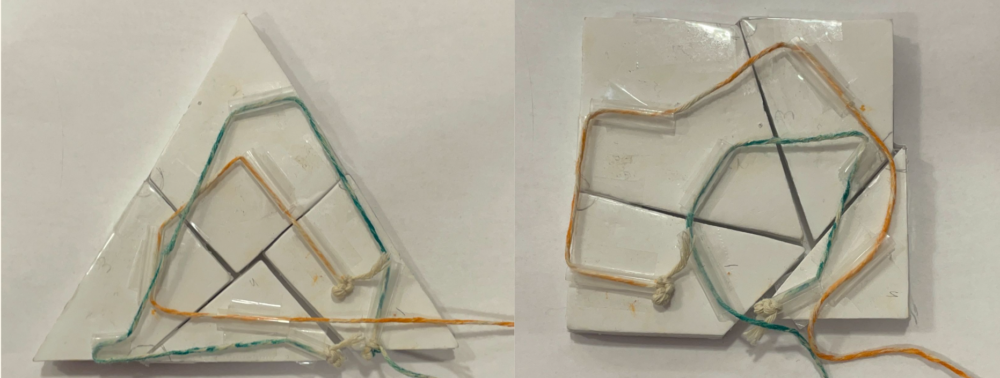
I called this method hinged threading. The main challenge was finding a good threading path. Too many turns in the thread increase friction, and too much thread makes the structure harder and more expensive to build.
For normal graph threading, every edge needs to be covered and every junction graph should be connected. Pull-up nets are a little different. The thread does not need to travel along every edge of the net. Instead, the important thing is whether the faces can come together correctly at the corners of the polyhedron.
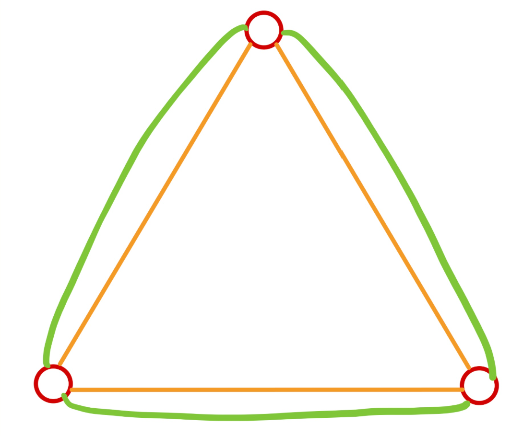
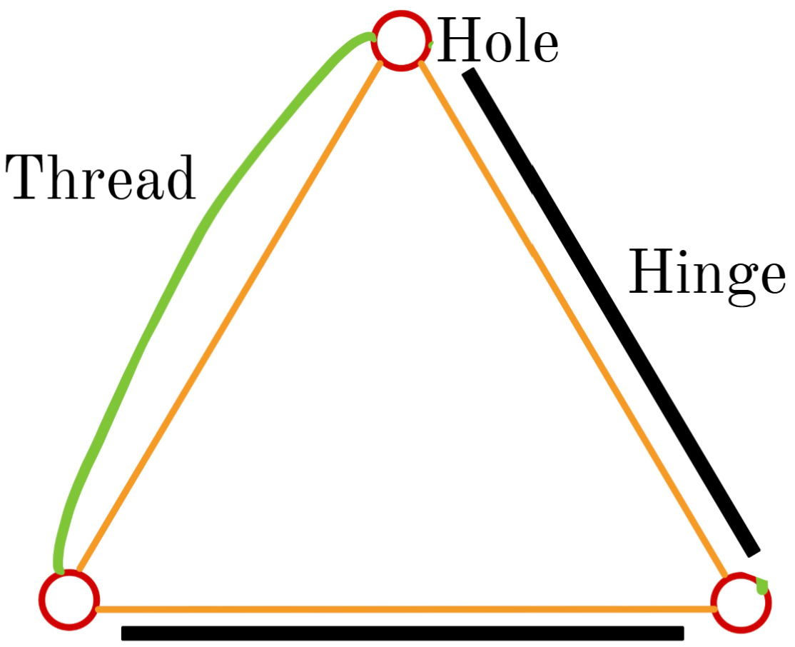
I defined the corners, holes, and hinged connections of a net, then used that structure to decide where threading was actually needed. Corners with fewer hinged connections needed more help from the thread. Corners with more hinged connections were already partly guided by the hinges.
Based on this, I developed an algorithm for choosing efficient threading points. The aim was to reduce the number of thread turns, which lowers friction, and also reduce thread length where possible.
Building and testing
To test the idea, I designed and laser-cut nets, added hinges, threaded them, and checked whether they could pull up into the intended shape. I tested cube nets, a pentagonal prism, a dodecahedron, and an icosahedron.
Cube nets
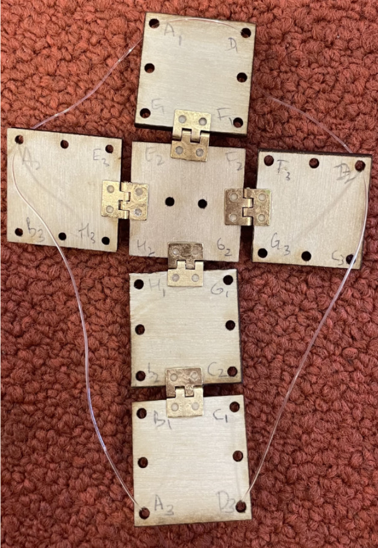
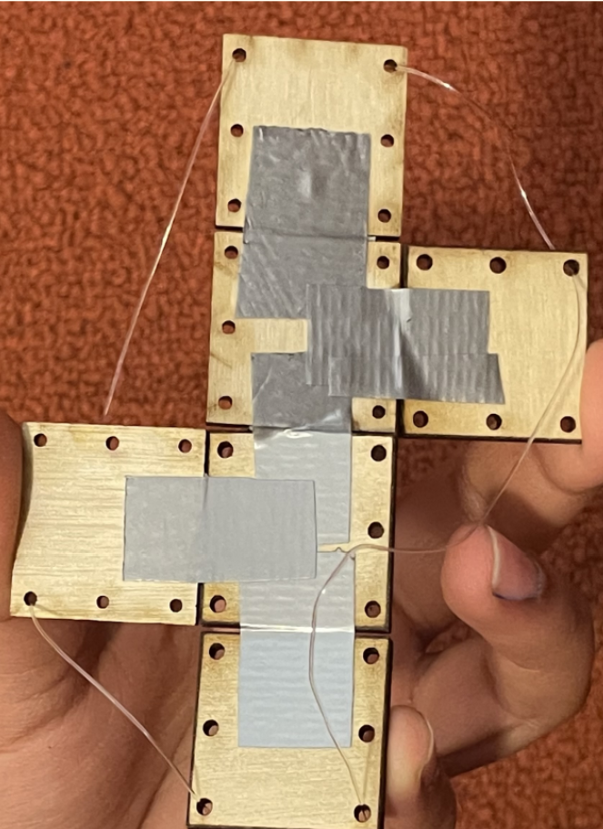
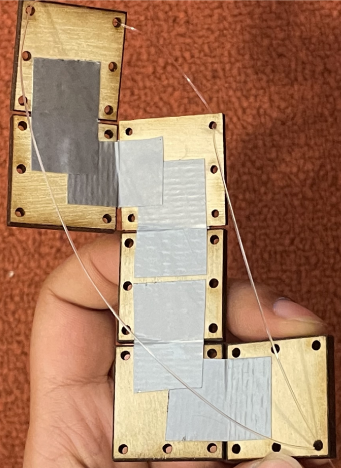
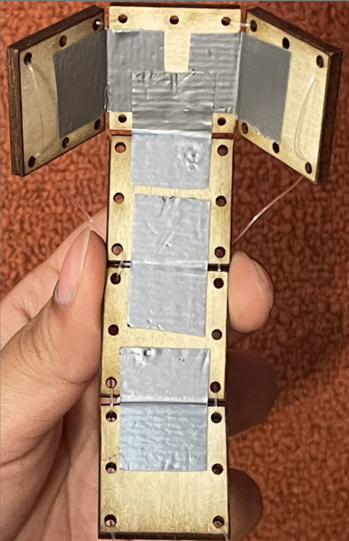
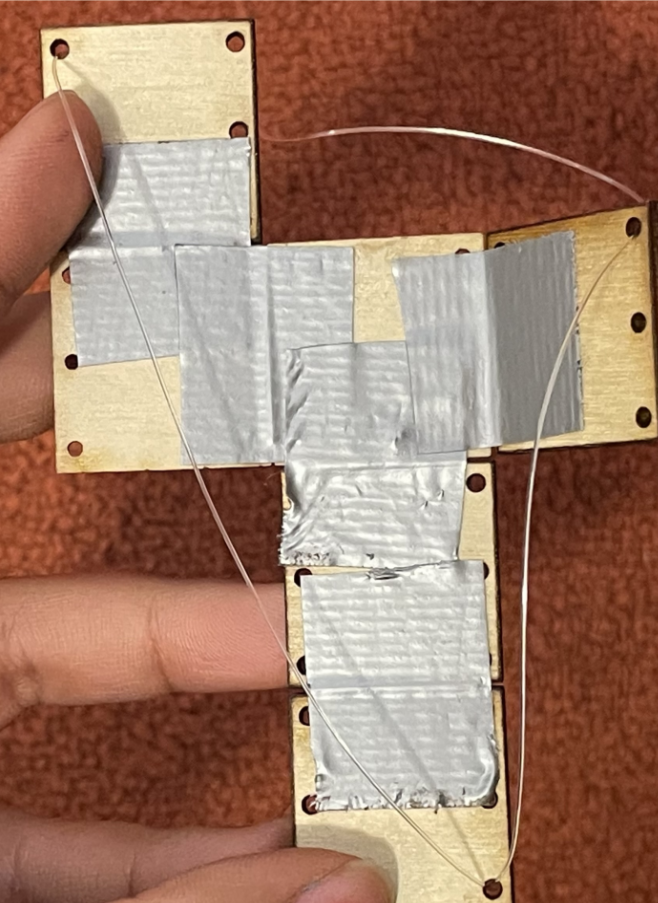
Fig. 13: Threaded hinged nets for a cube.
Other polyhedra
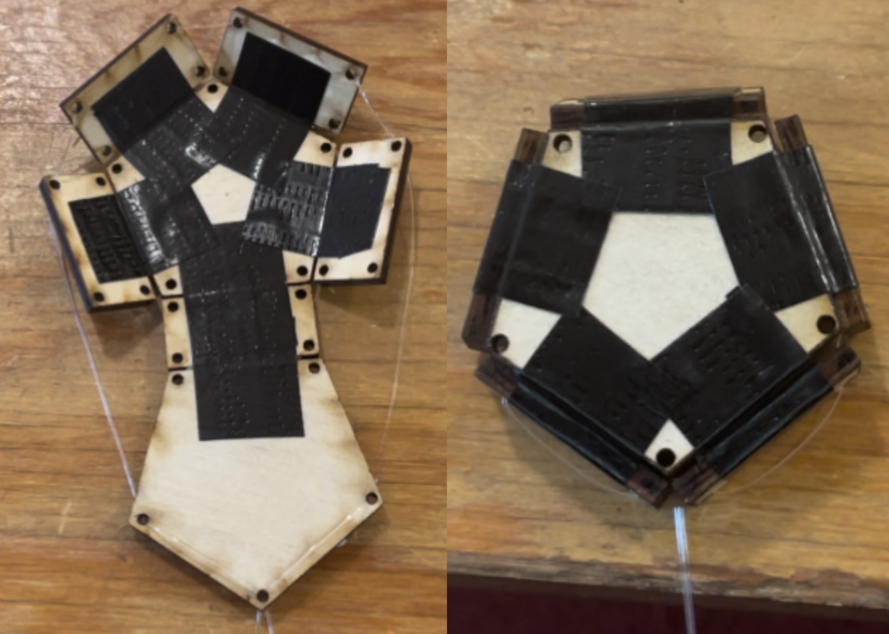

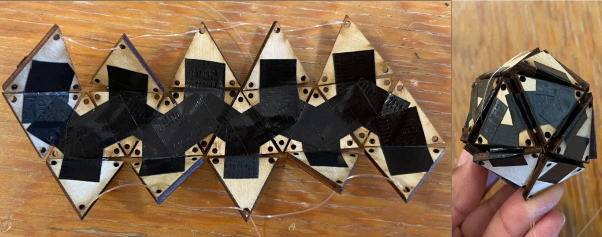
Fig. 14: Threaded hinged nets for various polyhedra.
Friction analysis
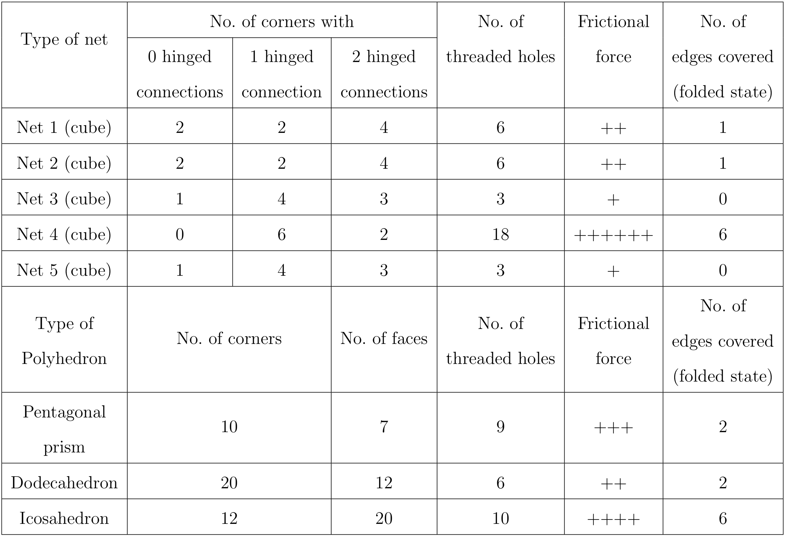
Table 1: Analysis of frictional force and thread length in different nets and polyhedra.
A lot of the work was iterative. Some hinges detached. Some nets were much harder to pull than others. That ended up being useful because it helped me compare lower-friction and higher-friction nets based on how many holes needed to be threaded.
Video
This video shows the models folding from a flat net into a 3D structure.
Future applications
Deployable structures are useful when something needs to be transported compactly and opened quickly.
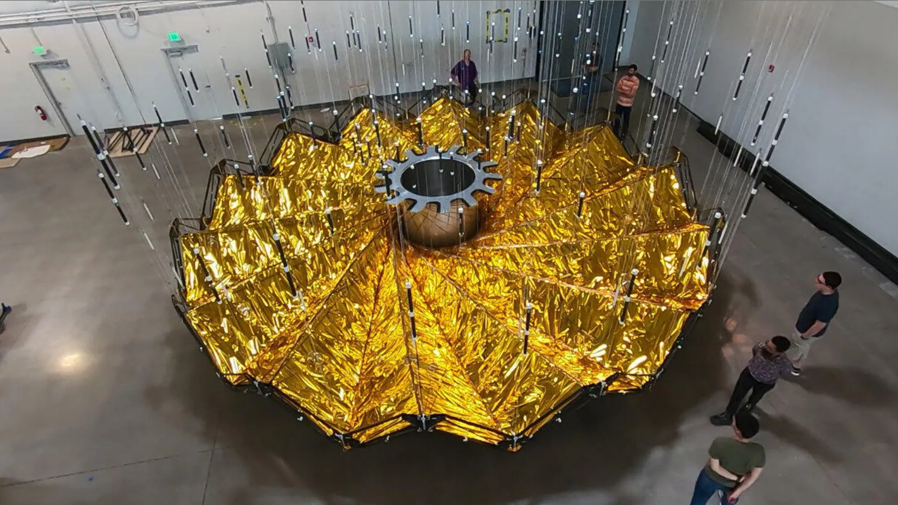
For this to become more practical, the hardware still needs work. Better hinges, lower-friction threading paths, and multi-threaded designs could make the motion smoother and easier to control.
Where it went
My RSI presentation was selected as one of the top 5 oral presentations among the RSI scholars.
A version of the work, titled Deploying Convex Polyhedral Nets, was presented at FWCG 2024 , the NSF-sponsored Fall Workshop on Computational Geometry at Tufts University.
I later presented this work at ISEF , where it won a Grand Award.
What I took from it
This project made research feel very real to me. It was not just reading papers or writing equations. It was also cutting plywood, threading tiny holes, fixing broken hinges, and trying to understand why one model worked better than another.
It also showed me that I like work that sits between theory and physical design. The math mattered, but so did the material, the hinge, the thread, and the fact that a model either folded or did not.